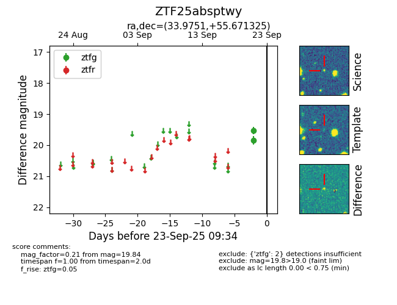

FINK: ZTF25absptwy
Lasair: ZTF25absptwy
ALeRCE: ZTF25absptwy
ZTF25absptwy (ztf,fink)
equatorial (ra, dec) = (33.9751,+55.67132)
galactic (l, b) = (134.7040,-5.25800)

last ztfg=19.84
2 ztfg detections